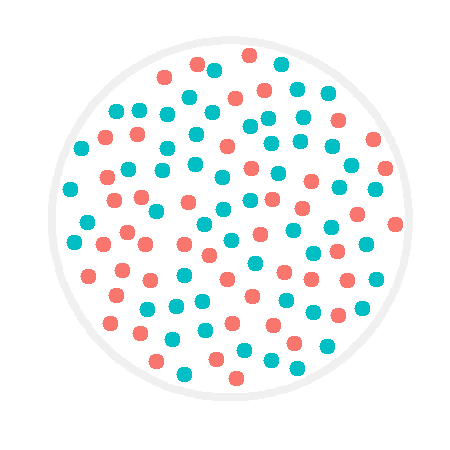
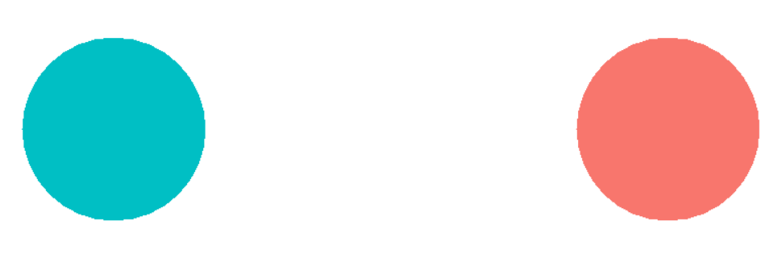
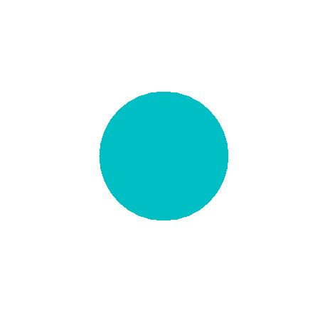
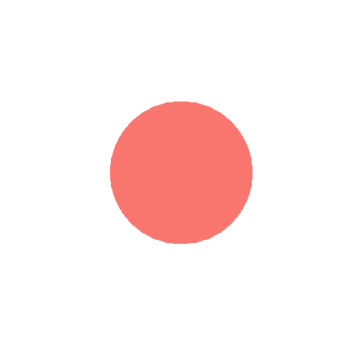

<!DOCTYPE html>
<html>
  <head>
    <title>My experiment</title>
    <script src="https://unpkg.com/jspsych@7.3.0"></script>
    <script src="https://unpkg.com/@jspsych/plugin-html-keyboard-response@1.1.2"></script>
    <script src="https://unpkg.com/@jspsych/plugin-image-keyboard-response@1.1.2"></script>
    <script src="https://unpkg.com/@jspsych/plugin-preload@1.1.2"></script>
    <link href="https://unpkg.com/jspsych@7.3.0/css/jspsych.css" rel="stylesheet" type="text/css" />
    <script type="text/javascript" src="lib/vendors/jquery-2.2.0.min.js"></script>
	  <script type="text/javascript" src="lib/jspsych-pavlovia-3.0.0.js"></script>
  </head>
  <body></body>
  <script>

/* -------------------------------------------------------------------------------------------------------------------------------- */
/* THINGS YOU CAN ADJUST */

var fix_cross_dur = [600, 800, 1000, 1200];
var mask_dur = 100;
var practice_display_dur = [100, 250, 500, 650, 1000];
var display_dur = [100, 250, 500, 650, 1000, 2000, 3000];
var how_long_to_respond = 2000;

/* -------------------------------------------------------------------------------------------------------------------------------- */
/* PRE-EXPERIMENT */

/* init connection with pavlovia.org */
var pavlovia_init = {
	type: "pavlovia",
	command: "init"
};

/* initialize jsPsych */
var jsPsych = initJsPsych();

/* create timeline */
var timeline = [];

/* preload all media */
var images = ['blue1.png','blue2.png','blue3.png','blue4.png','blue5.png','blue6.png','blue7.png','blue8.png','blue9.png','blue10.png',
  'blue21.png','blue22.png','blue23.png','blue24.png','blue25.png','blue26.png','blue27.png','blue28.png','blue29.png','blue30.png',
  'blue31.png','blue32.png','blue33.png','blue34.png','blue35.png','blue36.png','blue37.png','blue38.png','blue39.png','blue40.png',
  'red1.png','red2.png','red3.png','red4.png','red5.png','red6.png','red7.png','red8.png','red9.png','red10.png',
  'red21.png','red22.png','red23.png','red24.png','red25.png','red26.png','red27.png','red28.png','red29.png','red30.png',
  'red31.png','red32.png','red33.png','red34.png','red35.png','red36.png','red37.png','red38.png','red39.png','red40.png',
  'sanityblue1.png','sanityblue2.png','sanityblue3.png','sanityblue4.png','sanityblue5.png',
  'sanityred1.png','sanityred2.png','sanityred3.png','sanityred4.png','sanityred5.png',
  'blueResponse.png','redResponse.png','response_scr.png'];
var preload = {
  type: jsPsychPreload,
  images: images
};
timeline.push(preload);

/* -------------------------------------------------------------------------------------------------------------------------------- */
/* INSTRUCTIONS */

/* Trial: Welcome message */
var welcome = {
  type: jsPsychHtmlKeyboardResponse,
  stimulus: "Welcome to the experiment. Press space to begin.",
  choices: [' '],
  data: {
    task: 'instruction'
  }
};

/* Trial: Instructions */
var instructions = {
	type: jsPsychHtmlKeyboardResponse,
	stimulus: `
		<p>In this experiment, a large circle will appear in the center 
    of the screen. Inside that circle are 100 red and blue dots.</p>
      <div style='float: center;'></img>
    <p>You will have a short period of time (100 ms to 3 secs) to check if there are more red or blue dots. On each trial, red is 60% likely to be the correct answer.</p>
    <p>After this quick observation period, you will be prompted to respond by a screen with a blue dot on the left and a red dot on the right.</p>
      <div style='float: center;'></img>
    <p>If there were more blue than red dots, press <strong>f</strong>.</p>
    <p>If there were more red than blue dots, press <strong>j</strong>.</p>
    <p>Press enter to start practicing.</p>
	`,
  choices: ['Enter'],
	post_trial_gap: 1500,
  data: {
    task: 'instruction'
  }
};

/* -------------------------------------------------------------------------------------------------------------------------------- */
/* PRACTICE */

/* PRACTICE: Fixation cross */
var practice_fixation = {
  type: jsPsychHtmlKeyboardResponse,
  stimulus: '<div style="font-size:160px;">+</div>',
  choices: "NO_KEYS",
  trial_duration: function(){
    return jsPsych.randomization.sampleWithoutReplacement(fix_cross_dur, 1)[0];
  },
  data: {
    task: 'practice'
  }
};

/* PRACTICE Timeline variable: Stimuli */
var practice_stimuli = [
  {stimulus: "sanityblue1.png", correct_response: 'f'},
  {stimulus: "sanityblue2.png", correct_response: 'f'},
  {stimulus: "sanityblue3.png", correct_response: 'f'},
  {stimulus: "sanityred1.png", correct_response: 'j'},
  {stimulus: "sanityred2.png", correct_response: 'j'},
  {stimulus: "sanityred3.png", correct_response: 'j'},
  {stimulus: "sanityred4.png", correct_response: 'j'},
  {stimulus: "sanityred5.png", correct_response: 'j'},
  {stimulus: "blue1.png", correct_response: 'f'},
  {stimulus: "red1.png", correct_response: 'j'}
];

/* PRACTICE Trial: Stimulus display */
var practice_display = {
  type: jsPsychImageKeyboardResponse,
  stimulus: jsPsych.timelineVariable('stimulus'),
  trial_duration: function(){
    return jsPsych.randomization.sampleWithoutReplacement(practice_display_dur, 1)[0];
  },
  choices: "NO_KEYS",
  data: {
    task: 'practice'
  }
};

/* PRACTICE Trial: Visual mask */
var practice_mask = {
  type: jsPsychImageKeyboardResponse,
  stimulus: 'mask.png',
  trial_duration: mask_dur,
  choices: "NO_KEYS",
  data: {
    task: 'practice'
  }
};

/* PRACTICE Trial: Response */
var practice_response = {
	type: jsPsychHtmlKeyboardResponse,
	stimulus: `
    <div style='width: 1000px;'>
      <div style='float: left;'>
        </img>
      </div>
      <div style='float: right;'>
        </img>
      </div>
    </div>
	`,
  choices: ['f','j'],
	trial_duration: how_long_to_respond,
  data: {
    task: 'practice_response',
    correct_response: jsPsych.timelineVariable('correct_response')
  },
  on_finish: function(data) {
    data.correct = jsPsych.pluginAPI.compareKeys(data.response, data.correct_response);
  }
};   

/* Trial: too slow */
var slow_msg = {
  type: jsPsychHtmlKeyboardResponse,
  stimulus: "Response too slow. Please respond quicker next time!",
  trial_duration: 2000,
  data: {
    task: 'warning'
  }
};

/* Trial show "too slow" warning. Don't repeat the trial though (just skip it), otherwise subjects can use this to perform better. */
var slow_msg_conditional = {
  timeline: [slow_msg],
  conditional_function: function(){
    var data = jsPsych.data.get().last(1).values()[0];
    if (jsPsych.pluginAPI.compareKeys(data.response, 'f') | jsPsych.pluginAPI.compareKeys(data.response, 'j')){
      return false;
    } else {
      return true;
    }
  }
};

/* PRACTICE block */
var practice_block = {
  timeline: [practice_fixation, practice_display, practice_mask, practice_response, slow_msg_conditional],
  timeline_variables: practice_stimuli,
  randomize_order: true,
  repetitions: 1
};

/* PRACTICE screen if the subject fails the practice block */
var practice_fail_msg = {
  type: jsPsychHtmlKeyboardResponse,
  stimulus: "You missed more than 2 practice trials. Let's try that again. Press space to repeat.",
  choices: [' '],
  data: {
    task: 'practice'
  }
};

/* PRACTICE repeat if accuracy below 80% on the last 10 practice trials */
var practice_fail_msg_conditional = {
  timeline: [practice_fail_msg],
  conditional_function: function(){
    var practice_trials = jsPsych.data.get().filter({task: 'practice_response'}).last(10);
    var correct_practice_trials = practice_trials.filter({correct: true});
    var accuracy = Math.round(correct_practice_trials.count() / practice_trials.count() * 100);
    if (accuracy < 80){
      repeat_practice = true;
      return true;
    } else {
      repeat_practice = false;
      return false;
    }
  }
};

/* PRACTICE loop */
var practice_loop = {
  timeline: [practice_block, practice_fail_msg_conditional],
  loop_function: function() {
    if (repeat_practice == true) {
      return true;
    } else {
      return false;
    }
  }
};


/* -------------------------------------------------------------------------------------------------------------------------------- */
/* TRIAL & BLOCK */

/* Trial: Fixation cross */
var fixation = {
  type: jsPsychHtmlKeyboardResponse,
  stimulus: '<div style="font-size:160px;">+</div>',
  choices: "NO_KEYS",
  trial_duration: function(){
    return jsPsych.randomization.sampleWithoutReplacement(fix_cross_dur, 1)[0];
  },
  data: {
    task: 'fixation'
  }
};

/* Timeline variable: Stimuli */
var test_stimuli = [
  {stimulus: "blue1.png", correct_response: 'f'},
  {stimulus: "blue2.png", correct_response: 'f'},
  {stimulus: "blue3.png", correct_response: 'f'},
  {stimulus: "blue4.png", correct_response: 'f'},
  {stimulus: "blue5.png", correct_response: 'f'},
  {stimulus: "blue6.png", correct_response: 'f'},
  {stimulus: "blue7.png", correct_response: 'f'},
  {stimulus: "blue8.png", correct_response: 'f'},
  {stimulus: "blue9.png", correct_response: 'f'},
  {stimulus: "blue10.png", correct_response: 'f'},
  {stimulus: "blue11.png", correct_response: 'f'},
  {stimulus: "blue12.png", correct_response: 'f'},
  {stimulus: "blue13.png", correct_response: 'f'},
  {stimulus: "blue14.png", correct_response: 'f'},
  {stimulus: "blue15.png", correct_response: 'f'},
  {stimulus: "blue16.png", correct_response: 'f'},
  {stimulus: "blue17.png", correct_response: 'f'},
  {stimulus: "blue18.png", correct_response: 'f'},
  {stimulus: "blue19.png", correct_response: 'f'},
  {stimulus: "blue20.png", correct_response: 'f'},
  {stimulus: "blue21.png", correct_response: 'f'},
  {stimulus: "blue22.png", correct_response: 'f'},
  {stimulus: "blue23.png", correct_response: 'f'},
  {stimulus: "blue24.png", correct_response: 'f'},
  {stimulus: "blue25.png", correct_response: 'f'},
  {stimulus: "blue26.png", correct_response: 'f'},
  {stimulus: "blue27.png", correct_response: 'f'},
  {stimulus: "blue28.png", correct_response: 'f'},
  {stimulus: "blue29.png", correct_response: 'f'},
  {stimulus: "blue30.png", correct_response: 'f'},
  {stimulus: "blue31.png", correct_response: 'f'},
  {stimulus: "blue32.png", correct_response: 'f'},
  {stimulus: "blue33.png", correct_response: 'f'},
  {stimulus: "blue34.png", correct_response: 'f'},
  {stimulus: "blue35.png", correct_response: 'f'},
  {stimulus: "blue36.png", correct_response: 'f'},
  {stimulus: "blue37.png", correct_response: 'f'},
  {stimulus: "blue38.png", correct_response: 'f'},
  {stimulus: "blue39.png", correct_response: 'f'},
  {stimulus: "blue40.png", correct_response: 'f'},
  {stimulus: "red1.png", correct_response: 'j'},
  {stimulus: "red2.png", correct_response: 'j'},
  {stimulus: "red3.png", correct_response: 'j'},
  {stimulus: "red4.png", correct_response: 'j'},
  {stimulus: "red5.png", correct_response: 'j'},
  {stimulus: "red6.png", correct_response: 'j'},
  {stimulus: "red7.png", correct_response: 'j'},
  {stimulus: "red8.png", correct_response: 'j'},
  {stimulus: "red9.png", correct_response: 'j'},
  {stimulus: "red10.png", correct_response: 'j'},
  {stimulus: "red11.png", correct_response: 'j'},
  {stimulus: "red12.png", correct_response: 'j'},
  {stimulus: "red13.png", correct_response: 'j'},
  {stimulus: "red14.png", correct_response: 'j'},
  {stimulus: "red15.png", correct_response: 'j'},
  {stimulus: "red16.png", correct_response: 'j'},
  {stimulus: "red17.png", correct_response: 'j'},
  {stimulus: "red18.png", correct_response: 'j'},
  {stimulus: "red19.png", correct_response: 'j'},
  {stimulus: "red20.png", correct_response: 'j'},
  {stimulus: "red21.png", correct_response: 'j'},
  {stimulus: "red22.png", correct_response: 'j'},
  {stimulus: "red23.png", correct_response: 'j'},
  {stimulus: "red24.png", correct_response: 'j'},
  {stimulus: "red25.png", correct_response: 'j'},
  {stimulus: "red26.png", correct_response: 'j'},
  {stimulus: "red27.png", correct_response: 'j'},
  {stimulus: "red28.png", correct_response: 'j'},
  {stimulus: "red29.png", correct_response: 'j'},
  {stimulus: "red30.png", correct_response: 'j'},
  {stimulus: "red31.png", correct_response: 'j'},
  {stimulus: "red32.png", correct_response: 'j'},
  {stimulus: "red33.png", correct_response: 'j'},
  {stimulus: "red34.png", correct_response: 'j'},
  {stimulus: "red35.png", correct_response: 'j'},
  {stimulus: "red36.png", correct_response: 'j'},
  {stimulus: "red37.png", correct_response: 'j'},
  {stimulus: "red38.png", correct_response: 'j'},
  {stimulus: "red39.png", correct_response: 'j'},
  {stimulus: "red40.png", correct_response: 'j'},
  {stimulus: "sanityblue1.png", correct_response: 'f'},
  {stimulus: "sanityblue2.png", correct_response: 'f'},
  {stimulus: "sanityblue3.png", correct_response: 'f'},
  {stimulus: "sanityblue4.png", correct_response: 'f'},
  {stimulus: "sanityblue5.png", correct_response: 'f'},
  {stimulus: "sanityred1.png", correct_response: 'j'},
  {stimulus: "sanityred2.png", correct_response: 'j'},
  {stimulus: "sanityred3.png", correct_response: 'j'},
  {stimulus: "sanityred4.png", correct_response: 'j'},
  {stimulus: "sanityred5.png", correct_response: 'j'}
];

/* Trial: Stimulus display */
var display = {
  type: jsPsychImageKeyboardResponse,
  stimulus: jsPsych.timelineVariable('stimulus'),
  trial_duration: function(){
    display_duration = jsPsych.randomization.sampleWithoutReplacement(display_dur, 1)[0];
    return display_duration;
  },
  choices: "NO_KEYS",
  data: {
    task: 'display'
  },
  save_trial_parameters: {
    trial_duration: true
  }
};

/* Trial: Visual mask */
var mask = {
  type: jsPsychImageKeyboardResponse,
  stimulus: 'mask.png',
  trial_duration: mask_dur,
  choices: "NO_KEYS",
  data: {
    task: 'mask'
  }
};

/* Trial: Response */
var response = {
  type: jsPsychHtmlKeyboardResponse,
  stimulus: `
    <div style='width: 1000px;'>
      <div style='float: left;'>
        </img>
      </div>
      <div style='float: right;'>
        </img>
      </div>
    </div>
	`,
  trial_duration: how_long_to_respond,
  choices: ['f','j'],
  data: {
    task: 'response',
    correct_response: jsPsych.timelineVariable('correct_response')
  },
  on_finish: function(data) {
    data.correct = jsPsych.pluginAPI.compareKeys(data.response, data.correct_response);
    data.display_dur = display_duration;
  }
};

/* Link fixation cross, display, and response into one trial, then repeat to make one block. */
var one_block = {
  timeline: [fixation, display, mask, response, slow_msg_conditional],
  timeline_variables: test_stimuli,
  randomize_order: true,
  repetitions: 1
};

/* -------------------------------------------------------------------------------------------------------------------------------- */
/* EXPERIMENT */

/* Run blocks with breaks */
var experiment_beginning_screen = {
  type: jsPsychHtmlKeyboardResponse,
  stimulus: `
    <p>Great job, you scored 80% or higher! That's the end of practice. It's going to get a bit harder from here.</p>
    <p>Press b to begin the real experiment.</p>
  `,
  choices: ['b'],
  data: {
    task: 'instruction'
  }
};
var block_break = {
  type: jsPsychHtmlKeyboardResponse,
  stimulus: "<p>End of block. Feel free to take a break.</p><p>Press c when you're ready to continue with the experiment.</p>",
  choices: ['c'],
  data: {
    task: 'instruction'
  }
};

/* finish connection with pavlovia.org */
var pavlovia_finish = {
	type: "pavlovia",
	command: "finish"
	};

timeline.push(pavlovia_init);

timeline.push(welcome);
timeline.push(instructions);

timeline.push(practice_loop);
timeline.push(experiment_beginning_screen);

timeline.push(one_block);
timeline.push(block_break);

timeline.push(one_block);
timeline.push(block_break);

timeline.push(one_block);
timeline.push(block_break);

timeline.push(one_block);

timeline.push(pavlovia_finish);

/* -------------------------------------------------------------------------------------------------------------------------------- */
/* FEEDBACK */

/* feedback at the end of the experiment */
debrief_block = {
  type: jsPsychHtmlKeyboardResponse,
  stimulus: function() {

    var trials = jsPsych.data.get().filter({task: 'response'});
    var correct_trials = trials.filter({correct: true});
    var accuracy = Math.round(correct_trials.count() / trials.count() * 100);
    var rt = Math.round(trials.select('rt').mean());

    return `
      <p>End of experiment.</p>
      <p>You responded correctly on ${accuracy}% of the trials.</p>
      <p>Your average response time was ${rt} ms.</p>
      <p>Press c to complete the experiment. Thank you!</p>
    `
  },
  choices: ['c']
};
timeline.push(debrief_block);

/* -------------------------------------------------------------------------------------------------------------------------------- */
/* RUN */

/* start the experiment */
jsPsych.run(timeline);

  </script>
</html>